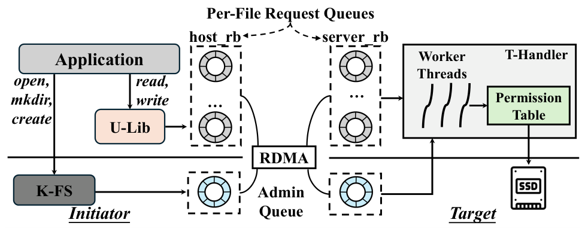
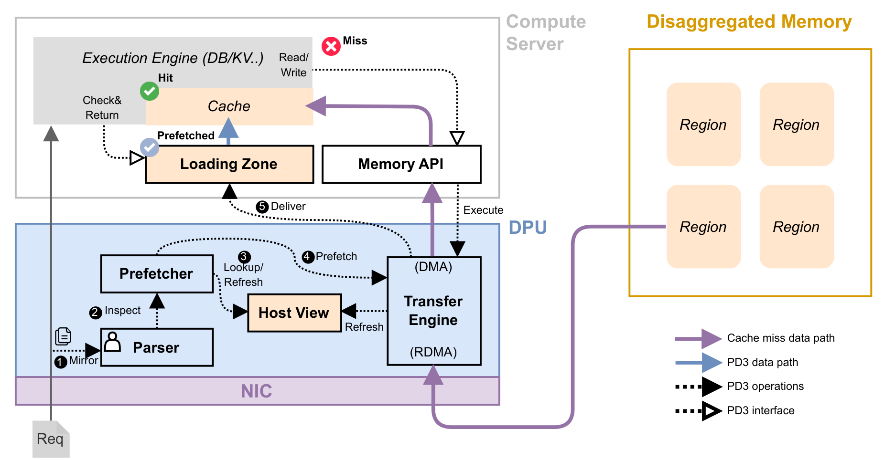
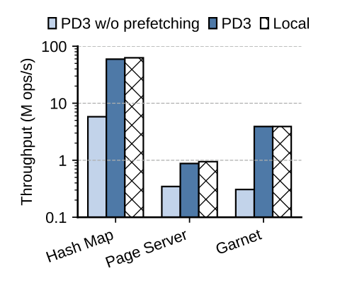
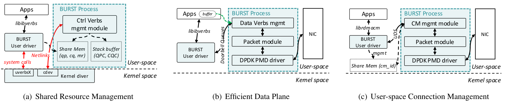
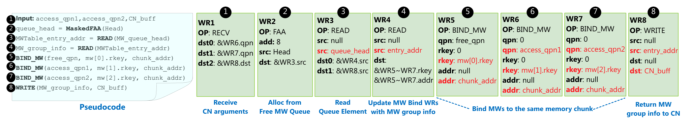
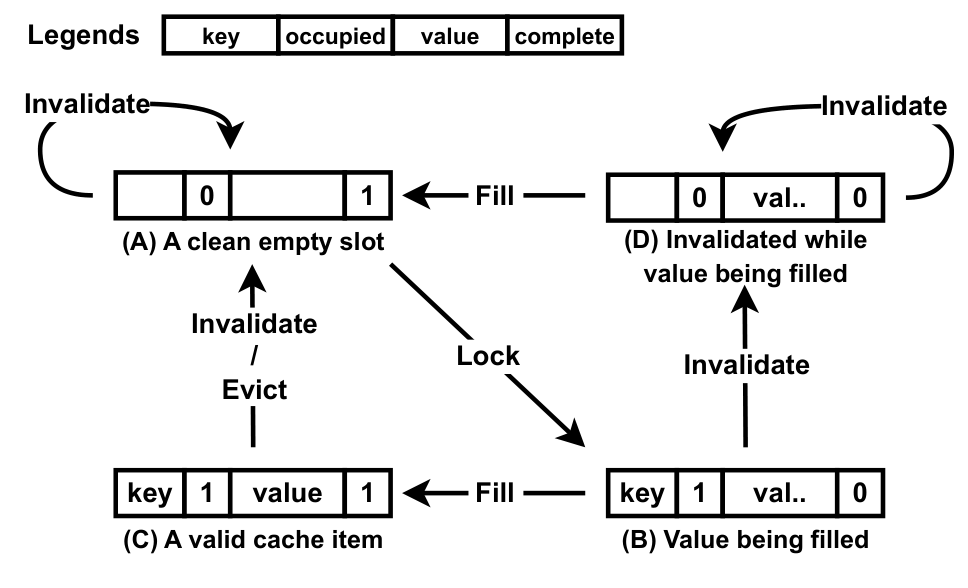
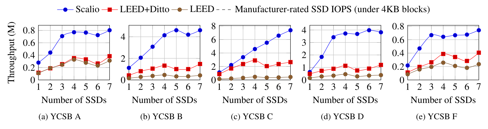

不是简单的内核旁路，而是重新放置权限、顺序和日志的责任。远端 SSD 已达到微秒级延迟，但传统文件系统仍让请求在主机锁后等待网络往返；日志或写时复制还可能让同一份数据多次跨网。直接让用户态访问块设备又会破坏文件权限，因此“缩短路径”必须同时回答谁检查权限、谁决定先后、何时可报告持久化。
机制拆解 HOW IT WORKS
- 打开时检查文件，访问时检查块
K-FS 保留 inode、目录、extent 和权限元数据。open 时检查进程权限，并让目标端为该打开文件建立请求队列。U-Lib 将文件偏移转换成 LBA；T-Handler 查询反向权限表，要求块的 owner 与队列所属文件一致，且读写类型符合队列权限。空闲块和元数据块归 K-FS，用户请求不能任意覆盖。
- 组号确定顺序，网络传输不必串行
主机只用短临界区分配单调递增的 request ID、group ID 和该组首个 request ID，然后释放锁并行发请求。基础分组把相邻读放一起、写单独成组；合并策略允许无冲突组更充分并行。目标端结合已完成请求数和组边界，判断前组是否真的结束，不能仅看“下一组已经到达”。
- 用目标端 redo log 避免重复跨网
atomic_write_start/commit/abort 定义原子写范围。新数据先在目标 SSD 的日志区持久化，提交后再后台 checkpoint 到文件位置。提交前崩溃丢弃未完成事务，提交后可从日志恢复。网络只传一次数据，但 SSD 上的日志写和 checkpoint 仍存在，不能写成消除了写放大。
- 元数据慢路径没有消失
用户态 extent 缓存未命中时通过 fiemap 补齐；append 先用 fallocate 分配块并建立权限，随后才走用户态数据路径。反向权限表变更由 K-FS 先 journal，再通知目标端更新缓存。
关键实验 WHAT THE DATA SAYS
Fileserver 平均吞吐比 Ext4 / F2FS / 远程 uFS 高 75% / 72% / 64%。
- 条件
- 两台双路 Xeon Platinum 8260 服务器；ConnectX-5；单块 Optane P4800X；各系统使用 O_DIRECT；Filebench 随并发线程数变化。
- 基线
- Ext4、F2FS，以及作者扩展的远程 uFS。
图13是文件系统组合负载，比摘要“最高19×”更适合评估业务价值；不同基线对应不同百分比，不能混写。
反向权限表约占设备容量 0.2%：1TB SSD 对应约2GB表。
- 条件
- 每4KB设备块记录8字节 owner ID；目标端按表块缓存。
- 基线
- 无检查的理想路径与缓存命中/缺失组合。
图15(a)应检验权限缓存缺失对尾延迟的影响。权限下沉只是换位置，不是免费。
适用边界
- 共享策略是多读或独占写；多 initiator、多 target 扩展仍属于未来工作，不能等同成熟多客户端并发写分布式文件系统。
- 单SSD和O_DIRECT结果不能推出页缓存命中、复制、纠删码或多租户场景收益。
- 原子写日志仍有SSD写放大及事务元数据持久化成本；需做提交点前后掉电与恢复测试。
对存储研发的判断
适合远端 NVMe 文件路径：先列出权限、排序、日志各自的权威状态，再决定下沉哪一段。最小验证应同时测吞吐、P99、SSD写放大和崩溃后的已提交事务。

CETOFS · 图5｜主机与存储端协作架构沿 U-Lib、K-FS、T-Handler 三条职责读图：真正被旁路的是数据访问的主机内核路径，不是元数据和权限管理。
Wenqing Jia et al. · CetoFS: A High-Performance File System with Host-Server Collaboration for Remote Storage · FAST 2026
图5，PDF 第 6 页；节选用于技术评论。
查看原文与上下文 ↗收益来自提前知道要访问什么，而不只是把 RDMA 工作交给 DPU。远端内存 miss 的成本不止网络时间，还包括主机解析、构造请求、轮询和消费结果。PD3 利用请求先到网卡、随后才被应用执行的时间差，在不延迟原请求的情况下并行取数据。
机制拆解 HOW IT WORKS
- 镜像请求，而不是让全部请求绕经 DPU CPU
DPU 的硬件 Flow 引擎将目标流量镜像给 Request Parser，正常请求仍送主机。用户提供 Parse(PktBuf,PktLen)，提取有序的 key 与 Read/Write/Delete；Read-Modify-Write 按 Read 处理。无法从网络请求提前得知地址/键的应用不能直接套用。
- Host View 只记录主机缓存里有哪些键
DPU 用 cuckoo hash set 保存已缓存键，不存完整值。批查、SIMD、huge pages、延迟查第二桶和双核分片让该查询能跟上小对象请求速率。它解析客户端写、删，以及远端读响应和刷出事件维护视图；主机静默淘汰可能造成漏预取，此时回退应用原有 miss 路径。
- DPU 直接访问远端，再 DMA 到 Loading Zone
Transfer Engine 统一 RDMA 与 DMA，路径是 DPU→远端内存→DPU→主机，避免先绕主机再发起请求。预取是旁路支路：应用若未找到已完成预取，不等待它，而按正常远端访问处理。
- 消费路径避免共享 Head 热点
应用调用 CheckAndReturn(key,buf)，复制全局 Head 为 LocalHead 并自行扫描；匹配后复制数据、用 CAS 将 PRODUCED 改为 CONSUMED。只有 DPU 负责懒推进 Head 回收已消费项。把所有消费者都争抢一个队头的设计，换成只对匹配对象状态竞争。
- 不要把 Host View 当一致性或持久化协议
它用于减少错误预取和漏预取，并不替代应用自身缓存一致性。DPU/主机独立故障的处理有限；正文将部分故障组合留给未来工作。
关键实验 WHAT THE DATA SAYS
Hashmap 均匀负载吞吐为 Redy 的约2.2×；4KB page server 高约33%。
- 条件
- BlueField-3，200Gbps；10亿个8B key+8B value、95%读/5%写；默认主机缓存1GB。page server 则为1000万页、随机读、每页4KB。
- 基线
- Redy 异步批处理/流水 RDMA；另比较同步 RDMA、Leap。
图10与图12不是同一工作负载。小对象受主机miss处理限制，大页更快碰到网络带宽上限，因此收益不同。
关闭预取后应用性能最高下降12.7×，且不再优于既有方案。
- 条件
- 图18：保留PD3传输卸载、只关闭预取，对比hashmap、page server和Garnet。
- 基线
- 同一 PD3 的无预取版本。
这是关键消融：证明主要收益来自把传输移到请求执行之前，而不是“用了DPU就快”。
Loading Zone 在16个应用线程下约1.5亿次调用/秒。
- 条件
- 图8；仅测 CheckAndReturn 并发消费路径。
- 基线
- 加锁和传统lock-free环形缓冲分别慢约224×和35×。
这是API微基准，不能写成端到端存储QPS。
适用边界
- 应用需适配访问API并提供请求解析；加密/不透明负载、数据依赖的后续访问需要另行设计。
- DPU使用4个核心（解析、Transfer Engine、两个Host View分片）；“零主机专用I/O核心”不代表零总计算成本。
- 必须测有效提前量、预取命中率、无用流量、写比例和Loading Zone回收积压。
对存储研发的判断
对远端page cache或KV缓存，先量出请求到达与真正访问之间的窗口，判断能隐藏多少miss成本；先做消融，再决定是否值得增加DPU软件与一致性维护复杂度。

PD3 · 图3｜请求镜像与预取路径两条并行路径是读图重点：正常请求仍去主机，镜像触发预取；不要画成用户请求必须串行经过DPU软件处理。
Sidharth Sankhe et al. · PD3: Prefetching Data with DPUs for Disaggregated Memory · NSDI 2026
图3，PDF 第 5 页；节选用于技术评论。
查看原文与上下文 ↗
PD3 · 图18｜关闭预取的消融实验看同一系统的预取开关消融，而不是跨系统最高倍数。纵轴为对数尺度，不能按柱子高度直接读线性比例。它把“提前取数据”的作用与“把传输搬到DPU”的作用分开。
Sidharth Sankhe et al. · PD3: Prefetching Data with DPUs for Disaggregated Memory · NSDI 2026
图18，PDF 第 12 页；节选用于技术评论。
查看原文与上下文 ↗不是无CPU的RDMA，而是可与硬件RNIC互通的软件传输栈。异构集群中有普通NIC也有硬件RNIC，内核Soft-RDMA容易受复制、调度和QP资源管理限制。BURST要保留verbs/CM接口与互通，同时把协议处理放到独立用户态进程；因此需要额外解决共享队列的隔离、崩溃及CPU预算。
机制拆解 HOW IT WORKS
- 控制面注册，数据面共享映射
应用通过libibverbs创建MR/QP/CQ，BURST内核驱动执行特权注册，经netlink把资源信息传给独立BURST进程，再mmap到它的地址空间。数据路径可以绕开内核，但内核并未从资源管理中消失。
- 每个worker一条共享Doorbell队列
多个应用QP作为生产者，向其worker的MPSC Doorbell Queue提交WQE通知；worker是单消费者。按worker分队列分摊热点。关键故障是生产者预留槽后退出，留下“僵尸槽”阻塞整个worker；论文增加超时回收避免一个应用拖住全部连接。
- Requester/Responder/Completer分工完成可靠传输
Requester读取WQE、查MTT并按MTU封装为RoCE/IB报文；Responder检查PSN/rkey，把有效载荷送到目标buffer；Completer处理ACK，确认整条WR完成后生成CQE。CQE不能因为“已经交给NIC发送”就提前产生。
- 发送零拷贝不等于接收零拷贝
发送路径利用共享映射与DPDK避免额外payload复制。接收端仍需从收到的packet buffer复制到应用指定地址；DSA可卸载这部分复制，但小包的任务提交/完成开销需考虑，不能写成所有方向全零拷贝。
- 互通基线与增强能力分开
默认丢包恢复使用Go-Back-N，重传时优先处理in-flight WQE并暂停新工作，超重试次数进入ERROR。软件两端可采用的增强重传/拥塞控制不能直接推及混合硬件RNIC；用户态CM兼容也不意味着所有网卡特性都等价。
关键实验 WHAT THE DATA SAYS
企业文件系统GetAttr：平均端到端52.4→37.6µs；P99.9为747→393µs。
- 条件
- 表1，元数据请求，I/O depth=1；论文未披露完整生产集群规模。
- 基线
- 内核TCP（KTCP）。
分别下降28.2%与47.4%。它直接说明元数据RPC受益，但不能替代大文件读写、复制或EC业务的实验。
400G微基准采用16个QP、post_send批大小16。
- 条件
- 性能测试的并发与批处理配置；多网卡扩展实验另用每NIC 8 QP及1MB消息。
- 基线
- RXE、KTCP及其他对照。
线速/CPU结果必须连同QP数、批大小、消息长度和worker核数一起读，不能当单QP、单请求延迟数据。
适用边界
- CPU仍执行软件协议，普通NIC并不会突然变成硬件RNIC。部署必须计入worker核、内存带宽和DSA资源。
- GetAttr测试没有覆盖完整文件读写与故障恢复；原文未给的集群规模不能补造。
- 超时回收需验证进程暂停后恢复、资源撤销及共享队列隔离，避免把慢生产者误当永久死亡。
对存储研发的判断
适合普通NIC与RNIC混部的成本评估。最小实验矩阵应包含soft↔soft、soft↔RNIC、小RPC/大IO、丢包与拥塞，并同时画CPU占用和P99.9。

BURST · 图5｜用户态 Soft-RDMA 架构区分三块：内核/用户共享资源管理、DPDK数据路径、用户态CM。应用和BURST是不同进程，共享Doorbell不代表直接访问NIC硬件寄存器。
Huijun Shen et al. · BURST: Seeking High-performance, Interoperability and Scalability in Soft-RDMA · NSDI 2026
图5，PDF 第 6 页；节选用于技术评论。
查看原文与上下文 ↗分配的对象不仅是地址，还包括绑定到特定QP的访问能力。数据访问能绕过CPU，动态分配却常需RPC让远端CPU绑定MW。静态大块MR分配很快，但空间浪费且隔离粗。OneSidedMW把绑定、解绑和空闲队列管理编成RNIC可执行链，保留细粒度能力边界。
机制拆解 HOW IT WORKS
- 把空闲空间组织为MW组
一个内存chunk对应多个type-2 MW。它们可以覆盖同一地址，但分别分配给不同Access QP，使swap-in、swap-out、预取或不同线程不必挤在同一QP。type-2 MW的QP绑定约束是安全机制，也是为何不能只给一个rkey就结束设计。
- 管理QP与访问QP分离
少量Alloc/Free QP运行管理WR链，大量Access QP专做数据传输。否则每个QP都挂载卸载逻辑，会消耗RNIC上下文并影响普通READ。链中的BIND_MW利用qpn字段把新MW分配给指定Access QP。
- 八步链根据前一步结果改写后续字段
RECV接收access_qpn和客户端返回buffer；FAA从空闲MW队列取条目；READ取得表项地址与组元数据；这些结果填进后续BIND_MW的地址/rkey/qpn；绑定组中的MW；最后WRITE将地址/rkey等元数据返回客户端。这里不是通用远端CPU函数调用，而是预先布置、数据驱动的WR链。
- 释放先做所有者校验，再回收
组内第一个MW专门绑定Free QP，释放链先尝试解绑它。若调用者不拥有对应QP，硬件保护检查失败，不能释放别人内存。通过后再解绑组内其余MW，并FAA推进空闲队列尾部，归还表项。
- 资源耗尽与崩溃走CPU慢路径
空闲队列槽位取出后清零；队列耗尽会触发保护错误通知MN CPU，CPU广播暂不可分配，补充后再通知恢复。MWTable记录owner id以回收崩溃CN资源。正常路径卸载不等于系统从此不需要CPU。
关键实验 WHAT THE DATA SAYS
4KB分配下峰值吞吐为Static-MR的63.8%，内存使用下降65.6%；较RPC-MW最高10.6×。
- 条件
- 1MN+6CN，100Gbps ConnectX-5 InfiniBand；1KB value的insert-only KV负载，增至每CN48线程以饱和MN RNIC。
- 基线
- Static-MR粗粒度静态分配与RPC-MW动态分配，图7。
三项数字表达的是同一空间/吞吐折中：它显著胜过RPC管理，但未超过静态预分配的吞吐上限。
8KB分配达到Static-MR峰值的80.2%，内存使用下降43%。
- 条件
- 与上一项同一扩展性测试，只改变分配粒度。
- 基线
- Static-MR。
块越大，管理摊销越好但空间回收越差。应画Pareto曲线而非只报单一最佳分配大小。
适用边界
- 每个MW组/块同一时间归一个CN，不自然提供多个不可信CN共享写同一块的协议。
- 初始化、WR链补充、空闲队列耗尽与故障回收仍使用CPU。
- 依赖具体RNIC的type-2 MW、跨QP字段和可执行WR链能力；InfiniBand测量不应直接外推所有RoCE/云虚拟RDMA环境。
对存储研发的判断
与FineMem配读：OneSidedMW重点是把MW管理链放到RNIC，FineMem重点是分配元数据、竞争与可恢复性。选型应同时比较硬件依赖、隔离、碎片和故障慢路径。

OneSidedMW · 图5｜八个 WR 组成的分配链从左到右追踪红色可修改字段：前一条WR的读结果成为后一条WR的操作数，使RNIC完成“取空闲项→绑定→返回”。同一chunk的多个MW分别服务Free和Access QP，图中不是多份物理内存。
Zixuan Wang et al. · OneSidedMW: Managing Disaggregated Memory Efficiently, Flexibly, and Securely with RNIC Offloading · NSDI 2026
图5，PDF 第 8 页；节选用于技术评论。
查看原文与上下文 ↗occupied / complete 四态约束并发缓存填充与写入失效。存储端CPU限制JBOF SSD扩展，one-sided缓存读和NVMe-oF target offload可以绕开它。但“SSD已写新值、缓存中仍在填旧值”会产生时间倒退：一次读先看到43，后发起的读却看到42。简单先改缓存或先写SSD都不足够。
机制拆解 HOW IT WORKS
- 热读与冷读走两条卸载路径
客户端先 RDMA_READ 一个缓存hash block。有效命中直接取值；miss 选victim，CAS占住槽位，再由NVMe-oF target offload从SSD读取，最后回填。写仍通过SEND交给目标CPU，批量写SSD与索引，并在完成后通知客户端。
- 把槽位拆为四态，区分空闲与失效中的填充
A=(occupied=0,complete=1)：空且可复用；B=(1,0)：正在填充；C=(1,1)：完整有效；D=(0,0)：填充尚未结束但已被写失效。读到B要等并重试；D当作miss，但不能让另一个写者抢占尚在写入的数据区域。
- 失效不是简单清空：旧填充不能重新发布
填充者通过CAS把complete置0，占槽后写key和occupied，并再次检查是否有同key的并发填充。SSD写成功的客户端把匹配槽的occupied置0：C→A，B→D。原填充者写完complete后，D只会变回A，不会复活成C，这正是阻止陈旧值重新进入缓存的关键。
- 写完成必须包括缓存失效
服务端SSD写成功通知只是写流程的一部分；客户端还要失效旧缓存。论文的线性化点把缓存与SSD一起考虑：有缓存项时以失效为关键边界，不能让业务在服务端通知后、客户端失效前就宣称整次写已完成。
- 批量提交用吞吐换等待
目标端ring buffer聚合多条更新，写SSD并更新内存next_offset，再批量通知。日志持久化后才确认；批处理减少每次更新的SSD写次数，却会增加排队和批次等待。
关键实验 WHAT THE DATA SAYS
小KV YCSB吞吐较LEED+Ditto约1.8–3.3×；基线约4块SSD后趋于饱和，Scalio继续随SSD数增长。
- 条件
- 1存储节点+5客户端，最多160线程；1–7块Samsung 970 PRO；ConnectX-6；2000万KV，key≤16B/value≤64B，Zipf 0.99，缓存1GB。
- 基线
- LEED与LEED+Ditto。
图11必须配图12的SSD IOPS读：验证增加吞吐是否真来自释放目标CPU，而不是不同数据规模或缓存容量。
批量写消融最高约1.96×吞吐提升，但延迟增加。
- 条件
- 7块SSD，YCSB A/B/C/D/F；图13消融，图14延迟-吞吐曲线。
- 基线
- 同一Scalio关闭批量写。
给存储SLO选择批大小时需比较同一负载下P99与吞吐，而非只挑峰值。
适用边界
- 主要评测把Intel Xeon限制为8核、8GB来模拟DPU资源，并非真实ARM DPU性能或功耗测量。
- 论文讨论可选租约回收失联填充者；实现仍应验证暂停后恢复的旧客户端不会再次写入已复用槽位，尤其是过期请求隔离。
- 复制/RAID作为正交可靠性机制讨论，不能把本文缓存协议实验视为完整多节点高可用验证。
对存储研发的判断
最值得移植的是并发状态与线性化点，而非“加一层RDMA缓存”。建议用延迟注入构造旧refill、新写、后续读的交错，验证后发起读不会看到倒退版本。

Scalio · 图9｜缓存项并发状态机四个状态中最重要的是D：它保留“有旧填充者仍在写”的事实。若把D当作普通空槽，旧RDMA写可能污染新占用者；若把旧填充结束当作有效发布，又会复活旧值。
Xun Sun et al. · Scalio: Scaling up DPU-based JBOF Key-value Store with NVMe-oF Target Offload · OSDI 2025
图9，PDF 第 8 页；节选用于技术评论。
查看原文与上下文 ↗
Scalio · 图11｜YCSB 工作负载结果读多负载与写多负载应分开看。SSD数量增加时基线CPU先饱和，而卸载读延长了可扩展区间；硬件是Xeon模拟DPU。
Xun Sun et al. · Scalio: Scaling up DPU-based JBOF Key-value Store with NVMe-oF Target Offload · OSDI 2025
图11，PDF 第 11 页；节选用于技术评论。
查看原文与上下文 ↗CROSS-PAPER READING
把五篇论文放回同一张系统图
卸载的是语义，不只是指令
CETOFS 将数据路径中的权限、顺序与日志交给存储端；PD3 把预取决策前移到 DPU；OneSidedMW 让 RNIC 执行管理工作。三者都在重新划分控制职责，评价时不能只记远端 CPU 是否被绕过。
吞吐收益必须还原路径
BURST 的发送零拷贝、接收复制与不同重传模式属于不同成本；PD3 的收益依赖请求提前量；Scalio 的读快路径依赖命中与一致性协议。应分别记录控制消息、PCIe、CPU、网络和 SSD 的工作量。
最难复制的是边界条件
O_DIRECT 与单 SSD、真实 DPU 与模拟 DPU、InfiniBand 与 RoCE、读多写少与高写入比例，都会改变瓶颈。本文将原始条件和结果放在一起，避免把局部优化当成通用系统结论。